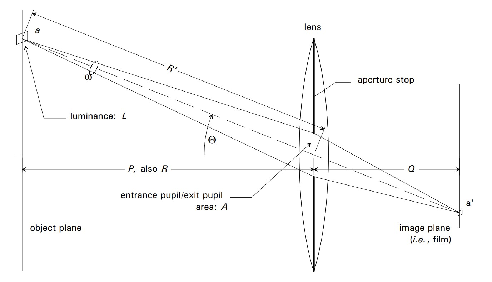
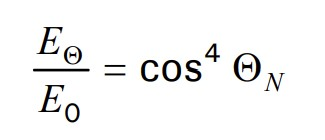
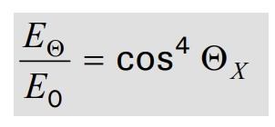
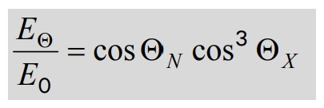
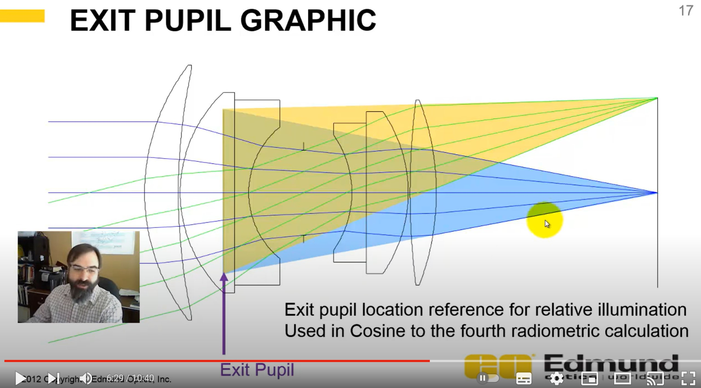

Ref : http://dougkerr.net/Pumpkin/articles/Cosine_Fourth_Falloff.pdf
https://www.youtube.com/watch?v=eZPDX2JEIPk

radiance : L
irradiance : E
E0 is the film illuminance (for a given scene luminance) at apoint on-axis, EΘ is the illuminance (for that same scene luminance) ata point off-axis

ΘΝ is the angle by which the object point is off-axis, measured (in object space) from the center of the entrance pupil.

ΘX is the angle by which the image point is off-axis, this timemeasured (in image space) from the center of the exit pupil.

